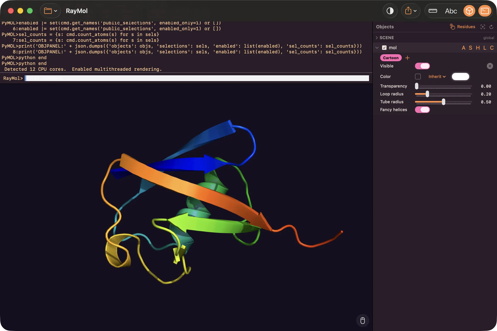
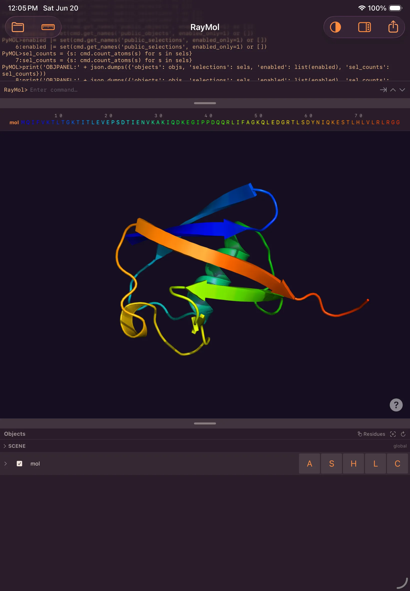
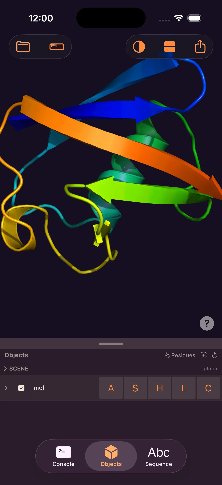
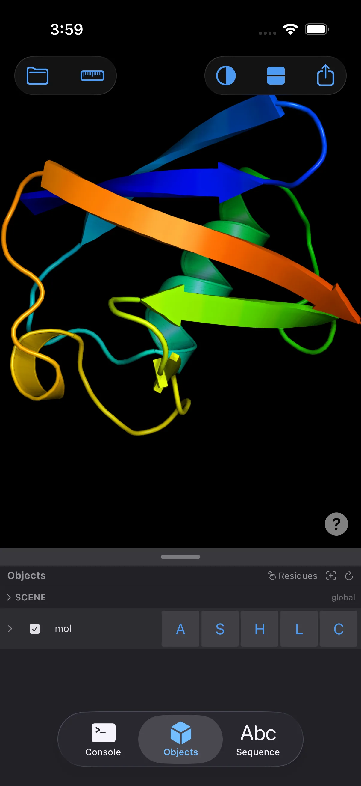
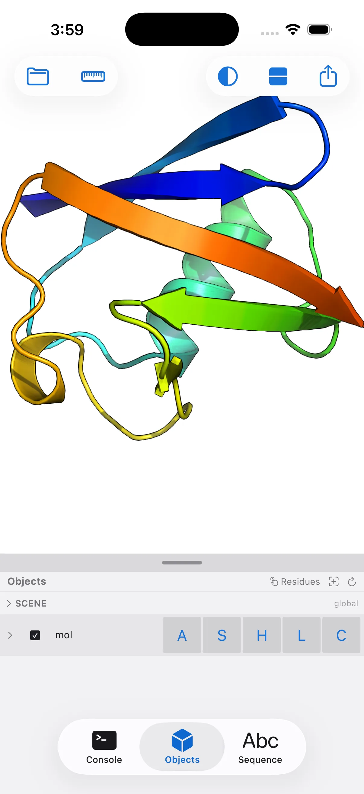
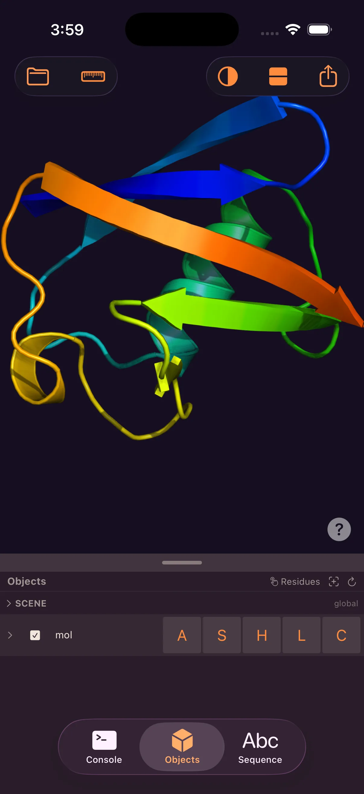
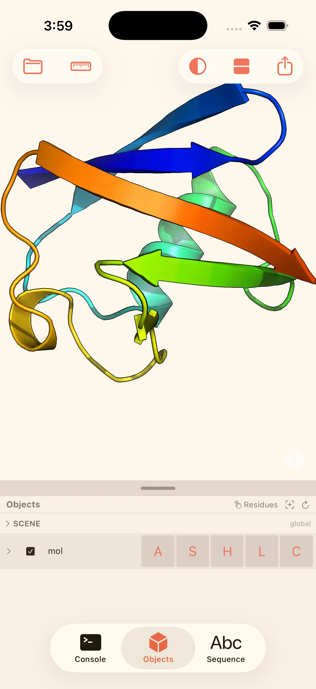

Molecular visualization,
built for Apple Silicon.
Raymol is a Metal-based build of PyMOL for Mac, iPad, and iPhone — a modern, native interface with real-time rendering, on the open-source engine you already know.


Get Raymol, free.
Three ways to install on Mac, one tap on iPhone and iPad — the same app and the same engine on every screen.
Homebrew
✦ MCP includedInstall and update from the command line.
brew install --cask javierbq/raymol/raymol
Same app, two builds. The direct-download and Homebrew builds are identical and include the built-in MCP server, so Claude can drive Raymol. The Mac App Store build is the same app without that integration — App Store sandboxing doesn't allow it. Everything else is the same.
The same app,
on every screen.
One Swift + Metal codebase, native on each device. Open a .pse on the Mac, keep working on iPad, review it on your phone.



The iPhone build is the complete app — the same engine, representations, settings, command language, and export as the Mac, on the device in your pocket.
Shadows and depth,
in real time.
A Metal rendering engine replaces OpenGL, adding real-time shadow mapping, ambient occlusion, and order-independent transparency at interactive frame rates. On supported Apple Silicon, hardware ray tracing is available for higher-quality lighting.
The same scene,
two renderers.
Open the same .pse in each. Raymol's Metal viewport adds shadows, ambient occlusion, and antialiasing that PyMOL's default OpenGL viewport doesn't show in real time.


Style controls,
no command line required.
A live inspector exposes per-representation controls — cartoon tube radius, surface quality, stick and sphere scale, transparency, per-object color — plus a scene card for lighting, shadows, and antialiasing. Drag a slider and the viewport updates. The familiar A/S/H/L/C menus are a tap away.

Rotate, zoom & roll
with one gesture.
Multi-touch on iPhone and iPad — one finger to rotate, two to pan, pinch to zoom, twist to roll, combined in a single gesture. On Mac, trackpad gestures map to the camera, with the classic per-button mouse mode also available.
A theme for every mood.
Restyle the entire interface in a tap. Four themes ship built in — and Theme Studio lets you craft your own. Your theme follows you across Mac, iPad, and iPhone.




Let Claude drive Raymol.
Raymol ships a built-in MCP server, so the Claude desktop app and Claude Code can drive it directly — fetch structures, run commands, change representations, and capture the viewport through real tool use. Open Connect ▸ Connect an AI app… and set it up in one click. No API key needed — it uses the Claude you already have.
Available in the Mac direct-download and Homebrew builds. The App Store builds — Mac, iPhone, and iPad — don't include the MCP server, which App Store sandboxing doesn't allow.


A full structural-biology toolkit
4K image & movie export
Render publication-quality stills up to 4K with transparent backgrounds, and author camera, state, and scene movies — exported to MP4 or GIF.
Sequence & selection tools
A color-accurate sequence viewer synced both ways with the 3D view, plus a visual selection builder with live atom counts and on-screen measurements.
The real command language
The genuine PyMOL engine with Python 3.13 — full commands, 800+ settings, PDB/mmCIF/SDF/MOL2, RCSB fetch, and .pse sessions, with a live console.
Good to know
Is Raymol really free?
Yes — free on every platform. On Mac: the Mac App Store, a direct download, or Homebrew. On iPhone and iPad: the App Store.
Is the iPhone version a stripped-down companion?
No. The iPhone app is the complete Raymol — same engine, same rendering, same full feature set as the Mac and iPad.
Is it compatible with PyMOL?
Raymol embeds the genuine open-source PyMOL engine, so your commands, settings, file formats, and .pse sessions work as expected.
What's the difference between the App Store and direct-download versions?
They're the same app. The Mac direct-download and Homebrew builds also include the built-in MCP server, so Claude can drive Raymol. The App Store builds — Mac, iPhone, and iPad — leave that out because App Store sandboxing doesn't permit it. The engine, rendering, and every other feature are identical.
What hardware do I need for ray tracing?
Raymol delivers fast rasterized rendering with shadows, ambient occlusion, and MSAA on every supported device. Real-time ray tracing is available on supported Apple Silicon.
Free on Mac, iPad, and iPhone.
Built on the open-source PyMOL engine. On the Mac App Store, as a direct download, or via Homebrew — and on the App Store for iPhone & iPad.